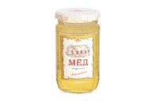
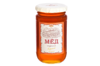
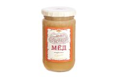
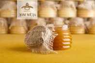
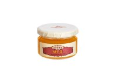
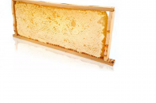

Каталог меда
595 р. / 500 г

Акациевый мёд 0,5 кг "Румела"
Акациевый мёд рождается из цветов белой акации, признанной важнейшим медоносным растением. Медовые гурманы всех стран особенно ценят акациевый мёд за его тонкий аромат, и светлую, почти прозрачную консистенцию.
3155 р. / 1000г

Дальневосточный липовый
Аромат: Тонкий, умеренный, очень приятный свежий древесный аромат необычной липы
Вкус: Уверенно сладкий вкус пропитанного бальзамом легкого бисквита. В стойком послевкусии легкая терпкость и деликатное угасание основного тона, вызывающее аромат летнего утра.
Вкус: Уверенно сладкий вкус пропитанного бальзамом легкого бисквита. В стойком послевкусии легкая терпкость и деликатное угасание основного тона, вызывающее аромат летнего утра.

690 р. / 500 г

Горный темный мёд 0,5 кг "Румела"
Изысканное благоухание горных медоносов влажных субтропиков трудолюбивые пчелы превращают в темный ароматный горный мед, традиционный компонент в питании долгожителей.

493 р. / 500 г

Горный светлый алтайский мёд 0,5 кг "Румела"
Неповторимые по красоте альпийские луга Алтайских гор, изысканное сочетание уникальных медоносных растений рождают горный мед, традиционный компонент в питании долгожителей.

2855 р. / 1000г

Горный Вереск
Натуральный вересковый мёд — это удивительный продукт, созданный самой природой. Он собирается с цветков вереска и обладает неповторимым вкусом и ароматом, который непременно очарует вас.
Аромат: Интенсивный и ароматный. Запах сена, подслащённой карамели, свежей мяты и шалфея.
Вкус: Вкус терпкий, горьковатый, с сильным травяным послевкусием.
Вкус: Вкус терпкий, горьковатый, с сильным травяным послевкусием.

499 р. / 250 г

Мёд с маточным молочком
Маточное молочко — самый сильный из известных науке биологических стимуляторов.Сбор маточного молочка очень кропотливый и трудоемкий процесс (собирается по миллиграммам), который длится всего несколько недель в году.
3 200 р. / 1 кг

Цветочный мед в сотах (полурамки)
В наличии
Продается в рамке. Вес рамки приблизательно 2 кг.
1955 р. / 1000г
Горный Светлый
Натуральный алтайский горный мёд — это свежий и ароматный продукт, который обладает множеством полезных свойств. Купить его можно по доступной цене на нашем сайте. Не упустите возможность попробовать этот вкусный и полезный продукт!